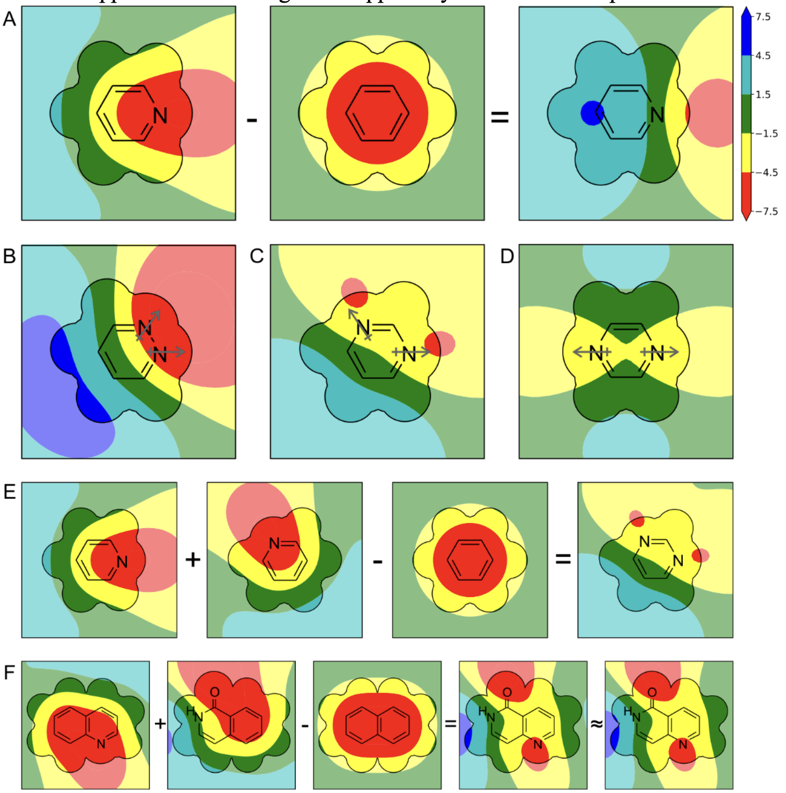
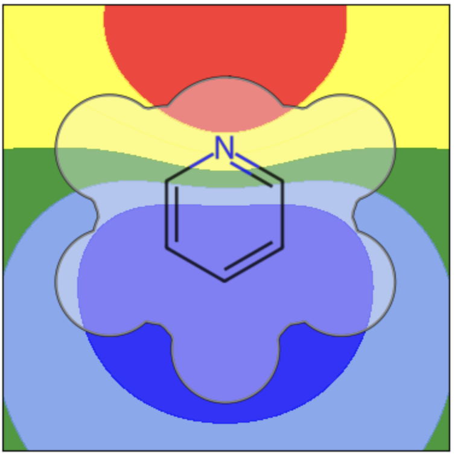

ESP contour surfaces: a re-creation
The paper Converting SMILES to Stacking Interaction Energies by Andrea N. Boostma and Steven E. Wheeler has some really appealing figures, in addition to the useful featurization and modelling work. Figure 6 shows several heterocycles accompanied by contour plots of the electrostatic potential. This is really a great figure because it makes the modelling work intuitively clear. It's also a good alternative to RDKit's Similarity Maps, so I'd like to try using it for visualizing partial charges, explaining contributions to scoring functions, and similarity maps. The notebook below is an attempt to recreate such a figure!
Posting the original figure here since it's open access:

The outcome is pretty close, but do note there's a few approximations that mean it's just a demo:
— It uses 2D coordinates from RDKit instead of an optimized 3D structure
— It uses fixed partial charges from RDKit's extended huckel method
— The ESP is calculated with an approximation used in ChimeraX and is not converted to kcal/mol.
All this means the results might not be useful for serious modelling tasks, but it's aesthetically pretty close.
EDIT: Steven Wheeler (PI) commented about converting to kcal/mol, so now the units in the notebook should be approximately correct (any errors are mine!)
